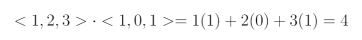
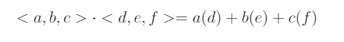
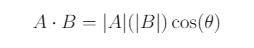
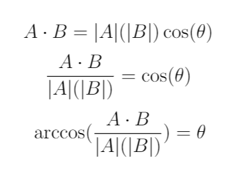
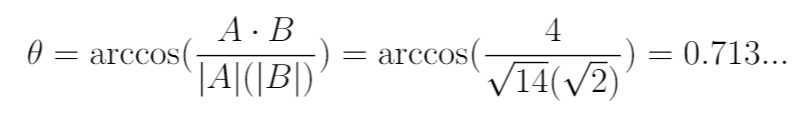
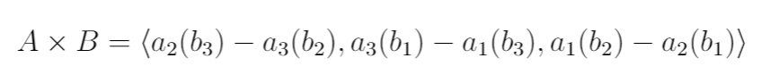

Intro
Welcome to PHY 303L!
Also a slight disclaimer: This is a study tool made from my point of view. If it doesn't make sense or you want a more in-depth explanation into anything, email me or any of the TA's, LA's, or go to office hours (plus discussions). I can't stress how beneficial a good math background is!!
Also slight disclaimer 2: My spelling
sometimes always pretty bad. If there is a mistake here, please let me know. Thanks!
Note:
While testing, I noticed that the files open in the browser instead of downloading. I will try to find a better solution, but as of right now if this affects you, just let me know.
Dot Products
In the first two lectures, we have introduced a few things concerning vector mathematics. I felt a tad bit guilty on not being able to explain very well what a dot and cross product were in class, so I am going to put some supplementary explanation here:
We first start with what is a dot product. Let us define two vectors for ease of explanation: Vector A = <1,2,3> and Vector B = <1,0,1>. To find the dot product of these two elements we simply take each component of Vector A and multiply it with the component in the same position in Vector B. Like this:

Great, now how would we do it for any general vector? It is pretty much the same process. This time let Vector A = <a,b,c> and Vector B = <d,e,f>:

Angle Between Two Vectors using Dot Products
Let us use the two vectors from before: Vector A = <1,2,3> and Vector B = <1,0,1>. We already know the dot product between the two is 4. What would the angle between the two be?
If your first instinct is to go grab a protractor, don't? There are a few good reasons for this, but the first one is how are you going to measure the angle between two vectors on a 2D page when the vectors are 3D? Instead, let's use dot products. Remember the other definition of dot product?

On the right-hand side (RHS), we see the dot product of Vectors A and B. On the left-hand side (LHS), we see the magnitude of Vector A times the magnitude of Vector B times the cosine of the angle between them. By the way, the absolute value bars around a vector mean magnitude (or length of the vector). The equation above can be manipulated to give us the angle:

Back to the example above with Vector A = <1,2,3> and Vector B = <1,0,1>, we can see by filling in values:

Cross Products
We also went over cross products during the lecture, but there were some struggles with matrix multiplication. This is not a problem, but it does make memorizing the math behind cross products a bit harder. Strictly speaking, you could (maybe) get by by memorizing the following formula, given Vector A = <a
1,a
2,a
3> and Vector B = <b
1,b
2,b
3>:

I found this hard to memorize the first time I had to do cross products. There is a (semi-mathematically correct) matrix method which will always produce the right answer, but strictly speaking, makes no real mathematical sense (~ish). A nice explanation of this can be found at:
Paul's Online Notes (very good for any calculus!!)